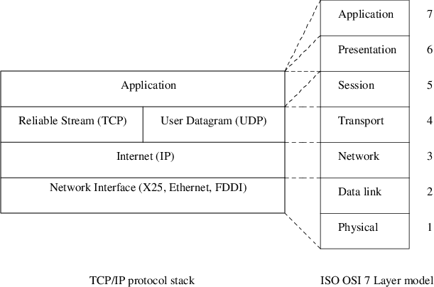
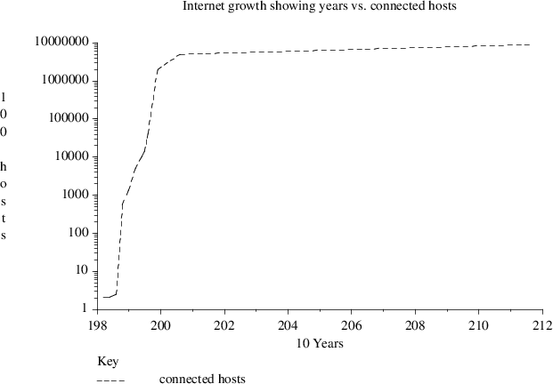
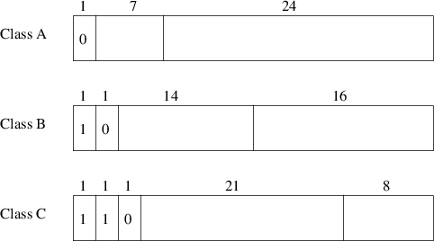

Index
1. Introduction to the TCP/IP protocol suite
- TCP/IP has been around for longer
than the ISO OSI 7 layer model
- the ISO OSI 7 layer
model is useful as a reference model for explaining the
function of data transmission
- practically TCP/IP has
won but literature still uses the ISO OSI 7 layer model
2. ISO OSI 7 Layer model and the TCP/IP protocol stack
- there is not an exact match between
the ISO OSI 7 layer reference model and the TCP/IP protocol
stack
-

3. Networking Glossary
- router
- a
special purpose, dedicated computer that attaches to two or
more networks and routes IP datagrams from one to another
- each router forwards a datagram to another router until
the datagram reaches its destination
- hub
- an electronic device that connects to
several computers and serves as the centre of a LAN, often
Ethernet using 100Base-T, 1000Base-T or 10000Base-T wiring
- firewall
- a security
mechanism placed between a company and the Internet to
protect the company’s computers from attack
-
hostname
- the name assigned to a
computer
- domain name
- the
name assigned to a computer
- a name might consist of
several words separated by periods (sometime abbreviated to
FQDN, fully qualified domain name)
- gateway
- a device used to connect two different
networks, especially a connection to the Internet
4. TCP/IP
- many excellent references on TCP/IP
- Internetworking with TCP/IP:
principles, protocols and architecture by Douglas Comer
†
- UNIX Network Programming by Richard
Stevens, chapter 4
5. History of TCP/IP and Internet
- part of the excitement about the
Internet is its size and growth rate

6. History of TCP/IP and Internet (continued)
- DARPA was the main funding agency
for packet-switched research in the USA DOD
- began working on the Internet in the
mid 1970s
- design a protocol that would recover if
various nodes disappeared
- DOD had in mind a nuclear
war!
- wanted a nervous system to carry all military
information in USA
- by 1980 TCP/IP protocol had
been designed
- the physical network was called the
ARPANET which consisted of
- point to
point connections
- packet switching over radio networks
- satellite communication channels
7. History of TCP/IP and Internet
- January 1983 DARPA demanded that all
computer attach to ARPANET via TCP/IP
-
TCP/IP implementations were available at low cost
- most
(90%) Computer Science departments were running BSD Unix
- TCP/IP available in source form for BSD systems
- growth
- 1987 Internet growing at
15% per month (Comer p.6)
- soon after that it began to
double each year!
8. Moores Law
9. History of TCP/IP
- some reasons why
- reference implementation of TCP/IP in
BSD Unix (1983) 4.3 BSD and 4.4 BSD
- inexpensive
microprocessors (1983)
- inexpensive wide area fiber
optic cable - carrying a high throughput of data (1984)
-
deployment of DNS (Domain Name System) (dynamic ASCII to
number lookup system)
10. Internet for the masses
- in early 1990’s Tim
Berner’s Lee was working at CERN and as a bye product
of high energy physics was working on document management
system
- he created a hypertext markup language which was
to become HTML
- HTTP is the protocol which WWW clients
and servers obey
- people mistakenly think the HTTP is
the Internet
11. Introduction to TCP/IP
- LANs have developed greatly over the
last 20 years
- there are a large
variety of LANs
- different LANs in different departments
and countries
- equipment can be bought on an incremental
basis
- evolution not revolution - cost savings
- can be really effective if applications can talk to one
another across the different LANs
-
companies with different departments can share resources
- one solution is for an operating system to
provide this multivendor integration
-
alternatively a standard network protocol could be designed
- Internet Protocol (IP) - so called because it
allows communication between LANs
12. Problems/benefits of TCP/IP
- what problems exist if we want to
link up many LANs?
- unique addressing
- hardware independent
- obvious benefits of the
Internet
13. TCP/IP Protocol Overview
14. TCP/IP Protocol Summary
- Internet Prococol
- provides the packet delivery service
for TCP, UDP and ICMP
- user processes do not normally
explicitly generate IP datagrams
- an IP address is
a virtual address, it was not constructed with a
preconceived piece of hardware in mind
- Address
Resolution Protocol
- maps an Internet
address into a hardware address
- Reverse Address
Resolution Protocol
- maps a hardware
address into an Internet address.
15. TCP and UDP
- primarily there are two transport
protocols used with IP: TCP and UDP
-
remember that IP may provide an unreliable service
- Transmission Control Protocol (TCP)
- provides a flexible two-way byte
stream protocol (byte stream allows addressing within
a host - to user, process or service)
- provides a
bidirectional pipe
- the source and destination
address are called a Port
- TCP is the most
popular transport protocol on top of IP
- it uses sliding
window technique to provide a reliable service
- it uses
a three way handshake to establish a connection
- and a
two way handshake to disconnect
16. User Datagram Protocol (UDP)
- is an unreliable datagram protocol
and is deliberately simple
- it does not
ensure that packets arrive in order, un duplicated, or even
at all!
- it sends discrete datagrams, and delivers
messages that arrive to the appropriate Port (same
addressing schema as TCP)
- a
port may belong to a user, process or service
-
the standard Internet name service, DNS, uses UDP
- it
can be regarded as multiplexing many users, processes and
services through one IP address
- UDP has no
standard connection procedure and no disconnect
procedure
17. IP technical introduction
- IP centerpiece of the TCP/IP
protocol stack. It hides the differences between data link
protocols from the transport protocols that the end user
applications use
- can replace old data
link technologies with new faster technologies
-
application independent
- IP defines a virtual
network address space
- if you are
connected to the Internet then your network has a unique IP
address
- within that network address your machine has a
unique host id.
- IP provides a connectionless
packet delivery service
- it routes
small messages from one machine to another on the addressed
within that message
- connectionless service routes each
packet separately and therefore does not guarantee reliable
delivery
- having connectionless packet delivery as the
basis for all Internet services makes it adaptable to a wide
range of hardware
- connectionless packet delivery is
often termed datagram
18. IP (continued)
- the IP protocol works as follows:
- transport layer split up a message
into datagrams of <=64k bytes
- transport layer
gives a datagram to the IP layer
-
datagram is transmitted through the Internet
- a hop at a
time (gateway to gateway)
- a datagram maybe divided into
smaller units at any hop
- datagram is reassembled
at the destination machine
- original
message is constructed
- delivered to the corresponding
transport layer
19. TCP/IP Support Protocols
- are another reason TCP/IPs
popularity
-

20. TCP/IP Protocol Summary
- Transmission Control Protocol
- connection-oriented protocol
-
reliable, full duplex, byte stream for user processes
- User Data Protocol
- connectionless
protocol for user processes
- unreliable
-
Internet Control Message Protocol
-
handles error and control information between gateways and
hosts
- normally generated by TCP/IP networking
software itself, not the user processes
21. TCP/IP Protocol Summary
- Internet Protocol
- provides the packet delivery service
for TCP, UDP and ICMP
- user processes do not normally
explicitly generate IP datagrams
- Address
Resolution Protocol maps an Internet address into a hardware
address
- Reverse Address Resolution Protocol
- maps a hardware address into an
Internet address.
22. IP Classes
-

- for example
193.63.129.1 is a class C address as
we convert the first byte of the address
193 into binary and examine the top
3 bits of a byte
- there are 127 class A networks
- each can have 16,777,216 hosts
- there are 16,384 class B networks
-
each can have 65,336 hosts
- there are 2,097,152
class C networks
- each of which have
256 hosts
- note that in practice the host byte
values 0 and 255 are reserved for network and broadcast
respectively
23. Private addresses in class A, B and C
- in addition each class A, B and C
have a private network address
- class A
- reserves the range 10.0.0.0 -
10.255.255.255 (16,777,216 hosts)
- class B
- 172.16.0.0 - 172.31.255.255 (1,048,576
hosts)
- class C
- 192.168.0.0
- 192.168.255.255 (65,536 hosts)
24. Example IP Static Configuration
- Case study - adding a machine onto
the Computer Science network
- the IP network in Computer
Studies connects:
- Apple computers
-
Windows computers
- Raspberry Pi machines
- Debian and
Mint GNU/Linux clients and servers
- routers and various
print services, etc
- each machine may run a
different protocol above the IP layer if they wish
- but most machines will run the IP
protocol
- the Computer Studies IP network is
connected (via a gateway) to the University of Southwales IP
network
- in turn is connected to the
world IP network via another gateway (through the University
of Southwales 1M bit line)
- every IP
address actually refers to the interface card and NOT
the machine!
- thus a gateway machine will have at least
two interface cards
- to add a new machine
floppsie onto the Computer Studies network
- floppsie’s interface card has to
be assigned a unique IP address
- first three numbers the
same as the Computer Science network (193.63.130)
- class
C network - means first 3 bytes are always the same
-
last number is the interface card number (hostid) 52
-
193.63.130.52
- software on the new machine needs
to know:
- the gateway on the Computer
Studies network to other networks
- its own interface
card IP address
- the nameserver IP address. The
nameserver translates all ASCII names to IP numerical
addresses.
- hop metric given with each gateway
25. IP Configuration
Index
1. Introduction to the TCP/IP protocol suite
2. ISO OSI 7 Layer model and the TCP/IP protocol stack
3. Networking Glossary
4. TCP/IP
5. History of TCP/IP and Internet
6. History of TCP/IP and Internet (continued)
7. History of TCP/IP and Internet
8. Moores Law
9. History of TCP/IP
10. Internet for the masses
11. Introduction to TCP/IP
12. Problems/benefits of TCP/IP
13. TCP/IP Protocol Overview
14. TCP/IP Protocol Summary
15. TCP and UDP
16. User Datagram Protocol (UDP)
17. IP technical introduction
18. IP (continued)
19. TCP/IP Support Protocols
20. TCP/IP Protocol Summary
21. TCP/IP Protocol Summary
22. IP Classes
23. Private addresses in class A, B and C
24. Example IP Static Configuration
25. IP Configuration
Index
This document was produced using
groff-1.22.